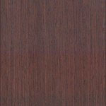
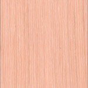
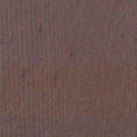
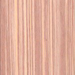
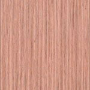
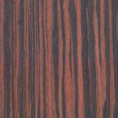
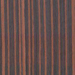
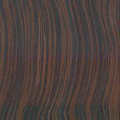

ДСП
«Particle board» — так звучит по-английски ДСП, что дословно переводится, как «доска из частиц». Если более подробно, то это древесно-стружечная плита, которая представляет собой листовой композиционный материал. Изготавливается он методом горячего прессования различных отходов древесины (стружек, опилок) с использованием связующего вещества — формальдегидной смолы.
Что же касается свойства ДСП, то этот продукт отличается высокими физико-химическими показателями. К ним относятся: эстетичность, привлекательность, универсальность. Кроме того, у ДСП достаточно много преимуществ: они легкие в обработке, прочные, влагостойкие, имеют высокую плотность, устойчивость к химикатам и атмосферному воздействию, а также доступную стоимость.
Технические характеристики ДСП зависят от нескольких факторов: производителя, форматов и назначения. Древесные плиты легко поддаются фрезеровке, сверлению, склейке и окраске. Также их очень любят дизайнеры за возможность воплощать оригинальные идеи в жизнь. Кроме того, уникальное сочетание прочности с привлекательным внешним видом и износостойкостью по праву делает ДСП лидером мебельной индустрии.
Специалисты делят ДСП на три вида:
Первого сорта. Данный вид соответствует стандарту, имеет однотонный цвет, ровную поверхность и края.
Второй сорт. Плиты более грубой работы. По краям они имеют незначительное отслоение или скол. Могут быть с небольшими царапинами. Во всем остальном, ничем не отличаются от первого вида.
Без сорта. Используются, в основном, в строительстве. Такое ДСП изготавливается из стружки коры, поэтому, имеют самую грубую текстуру.
Профессионалы-мебельщики советуют для изготовления мебели использовать плиты только первого сорта, которые проходят тщательную проверку и являются безопасными для здоровья человека. Второй и третий — больше подойдут для строительства и для отделки нежилых помещений.
Производителей, которые занимаются изготовлением ДСП достаточно много. Мы работаем с давно проверенными и качественными ТМ.
Массив
Натуральное дерево благодаря современным технологиям обработки адаптировано практически под любой стиль от классики до модерна и используется в различных дизайнерских решениях.
Фасады из древесины очень долговечны. Они не лишаются со временем главных своих качеств: безопасности, прочности и красивой текстуры.
Изделия из дерева абсолютно безопасны. Ведь дерево – самый экологичный материал. Его подвергают минимальному воздействию и обработке: покрывают морилкой, лаком или маслом. Минимально и количество наносимых препаратов – сам же процесс обработки включает несколько высокотехнологичных операций, такие как шлифовка, грунтовка, сушка и др. Немаловажным является то, что прежде, чем попасть в производство, древесина проходит процедуру атмосферной либо камерной сушки. Любая уважающая себя и своих клиентов компания с особой тщательностью проводит эту операцию, поскольку мебель из сырого массива «поведет», и покупатель будет обманут в лучших ожиданиях.
Отдельно следует рассмотреть такие украшения фасадов из массива как тисненый меандр по контуру филенки и фасады с патиной.
Меандр - тонкая резная полоска из того же дерева, что и сам фасад, приклеенная по контуру филенки.
Фасады из массива с патиной - проще говоря искусственно состаренные фасады. Патина - имитация остатков старой краски либо позолоты, которые образуются вследствие очень длительной эксплуатации либо ремонта.
Также "патиной" выделяют текстуру дерева на окрашенных фасадах из массива.
МДФ шпон








МДФ шпон — это тонкий слой спиленной древесины, который внешним видом ничем не уступает целостному массиву дерева потому что, полностью сохраняет его текстуру и рисунок. Шпонированные фасады — это оптимальный вариант для тех, кому нравится натуральное дерево. Они создают идеальный дуэт прочности и долговечности, а шпон придает фасаду натуральности и классической естественности.
МДФ крашенный
МДФ крашенный- это фасады и детали, покрытые несколькими слоями эмали и лаком, который придает фасаду блеск. Цвет фасада можно выбрать из более чем нескольких тысяч тонов и оттенков, подбираемых по колерной карте.
МДФ пленочный
Ламинированный МДФ получается путем нанесения на плиту МДФ специальной ламинированной пленки. Сама пленка изготавливается из бумаги, с добавкой меламиновых смол. При обработке такой заготовки определенной температурой, под высоким давлением, смолы, входящие в состав пленки, проникают в верхние слои МДФ, образуя прочную, влагостойкую основу.
Это самые простые и недорогие материалы для изготовления кухонь, при характерной дешевизне достаточно износоустойчивые и прочные. Однако следует учитывать, что такой материал кухни со временем потускнеет, возле мойки и духового шкафа пленка может отслаиваться, а с тыльной стороны белый цвет превратится в желтый.
Столешницы
Столешницы из искусственного камня, наряду с другими изделиями, все чаще используемыми в интерьере жилья, из этого пользуются все большим спросом.
Искусственный камень используется для изготовления раковин, смесителей, кухонных столешниц, а также столешниц для ванн и различных кухонных атрибутов.
Этот материал заслужил свою популярность благодаря целому ряду свойств, таких как:
Экологичность. Материал не токсичен, вбирает в себя пыль и плесень. Эти свойства особенно важны, поскольку столешница для кухни подвергается максимальному воздействую различных веществ, таких как жиры, вода, частички различных продуктов питания.
Бесшовность. Поверхность искусственного камня позволяет делать покрытие из него бесшовным и идеально гладким.
Простота ремонта. Это материал отличается высокой прочностью, но в случае его разрушения, его можно легко отремонтировать, сделав место разрушения незаметным.
Легкость обслуживания. Любые загрязнения с поверхности столешниц можно удалить с помощью губки и мыльного раствора.
Возможность постформирования материала, позволяющего получать столешницы абсолютно любых размеров и форм.
Широкая цветовая гамма, позволяющая подобрать изделия к любому интерьеру.
Принимая во внимание свойства этого материала, столешница из искусственного камня на кухне – это выбор не только в пользу эстетики и роскоши, но и выбор в пользу практичности и рациональности.
В пользу этого материала можно добавить большое разнообразие расцветок. Каждая столешница, искусственный камень которой обладает своеобразным неповторимым рисунком, по своему уникальна и позволит вашей кухне иметь поистине индивидуальные черты.
Столешница является основным элементом современной кухни. Наиболее популярным материалом изготовления столешниц является ламинированная ДСП. Столешницы для кухни производятся из специального влагостойкого ДСП, поверхность покрывается ламинационной пленкой. Толщина столешниц обычно составляет 28 или 38 мм.
Столешницы из ламинированной ДСП обладают рядом преимуществ, таких как легкость в установке, высокая прочность, относительно низкая цена и большой выбор цветов. Из недостатков можно отметить необходимость обрабатывать герметиками любые швы и места соединений со стеной, для избежания попадания влаги на незащищенные участки.
Наполнение кухонь
Истинная сущность кухни спрятана за фасадами мебели, где по своим местам разложены все рабочие инструменты. Чтобы в собственной кухне добиться порядка, доступным и обзорным сделать все необходимое, то следует рационально распорядиться внутренним пространством ящиков и шкафов. Хорошо продуманная система хранения является главным секретом удобства кухни. Именно удобное и рациональное наполнение кухонных ящиков и шкафов способны облегчить каждой хозяйке ее пребывание на кухне и сделать приготовление пищи комфортным.
Наполнение шкафов и гардеробных комнат
Великое мастерство профессионала состоит возможности гармоничного сочетания внешнего и внутреннего наполнения продукта, который он создает. Это означает, что готовое изделие должно быть не только красиво снаружи, но и удобно в обращении и надежно.
Именно благодаря наполнению для шкафов вы сможете создать практичную мебель и подчеркнуть индивидуальность изделия. Широкий выбор наполнения и его возможность трансформироваться и подстраиваться под любые заданные размеры позволит наполнить любой шкаф именно так, как вы захотите.
Пескоструйная обработка
Необычная технология обработки стеклянной или зеркальной поверхности превращает простой, казалось бы, предмет интерьера в стильное оригинальное творение.
Поверхность обрабатывается специальным абразивным материалом с помощью сжатого воздуха по намеченному контуру или сплошному участку (по трафарету). В результате глянцевая поверхность приобретает матовый рисунок по предусмотренному эскизу. Такое изображение не подвержено механическим повреждениям, не боится бытовой химии.
Необычный эффект достигается при обработке вместо лицевой поверхности, обратной стороны стекла или зеркала. В таком случае рисунок спрятан внутри фасада, и ровная блестящая поверхность остается нетронутой. Для усиления эффекта, иногда используется внутренняя подсветка, благодаря которой нанесенный узор смотрится более выигрышно.
Батик
Полноцветная широкоформатная печать на батике, применяется в основном для последующей накатки такого изображения на стекло или на ДСП.
Технология производства позволяет распечатать и накатать практически любое изображение, главные требования здесь - допустимое для большого формата расширение и соблюдение пропорций изображения
Находясь на тыльной стороне стекла, рисунок защищен от воздействия пыли, влаги и других агрессивных факторов, кроме того, в случае боя, батик с нанесенным слоем клея, выполняет функцию защитной пленки. Все это позволяет использовать стекла в помещениях с повышенными санитарными требованиями, например в детских комнатах или в помещениях с относительно большой влажностью, например, в ванных или кухонных помещениях.
Устойчивость стекла к механическим повреждениям, царапинам, пятнам и простота в уходе, завоевали предпочтение дизайнеров. Для ухода за рисунком на стекле достаточно применять обычные средства для мытья стекла или зеркала.
Изображение на стекле это не только фотокартина или настенное панно, нанесенное на стекло изображение может занимать всю поверхность стены, перегородки, двери, фасада шкафа, но при этом, всегда будет безопасным, долговечным и простым в уходе элементом декора.
Фотопечать
Полноцветная фотопечать на стекле позволяет достигать фотографического качества изображения, такая печать используется для оформления интерьера. Область применения – стеклянные вставки в мебель, кухонные фартуки, стеклянные двери, перегородки, двери шкафов-купе, подвесные потолки, цветные подложки для зеркал и т.д.
Технология обеспечивает прекрасную передачу цвета, четкость и яркость рисунка. Кроме того, гарантируется, что стекло с таким рисунком соответствует требованиям безопасности и экологичности. При печати используються только оригинальные, экологически чистые, без растворителей, чернила. Для безопасного пользования стекло покрывается защитной пленкой. Техника фотопечати на стекле позволяет рисунку оставаться стойким к механическим воздействиям, к мытью и истиранию.
Зеркала и стёкла
Зеркало давно и прочно вошло в наш обиход. Функция зеркала, давать отражения людей, смотрящихся в него или окружающего интерьера. Но, кроме того, зеркала - простое и оригинальное украшение любого пространства. При правильном размещении отражающие поверхности могут зрительно увеличить размеры комнаты, добавить объёма и глубины.
Примеры работ из стекла:
Витражи
Витражи – это особая область искусства, которая отображает вечную красоту, симфонию красок, цветов и света. Витражи могут стать прекрасным украшением Вашего интерьера. Они являются богатым декоративным украшением, заменяют оконные стекла и дверные филенки, пропускают свет и своей восхитительной радужной игрой могут украсить любое помещение. Витражи выигрывают не только от яркого солнечного света, но и от мягких тонов заката и сверкающих вечерних огней.
Основные технологии изготовления витражей
Техника «Тиффани» названа в честь американского декоратора-экспериментатора Луиса-Комфорта Тиффани (1848-1933 г.) — в свое время одного из самых успешных дизайнеров, из семьи известного нью-йоркского ювелира. Тиффани создал многоцветное стекло — фавриль, окрашенное особыми реактивами, и первым предложил использовать для обертывания разноцветного стекла клейкую медную фольгу вместо свинца (витражные швы получаются сверхтонкими). Каждый кусочек цветного стекла по периметру заворачивают в фольгу, после чего спаивают друг с другом, создавая разнообразные художественные комбинации.
Фьюзинг — обжиг стекла. Не требует металлического профиля. Рисунок формируют на отдельном листе стекла, выкладывая цветными кусочками или стеклянными гранулами, а потом обжигая в муфельной печи. Цветные части могут смешиваться или иметь четкие контуры; витраж обладает фактурой и разнообразным рельефом. Детали декора, изготовленные по технологии фьюзинга, можно использовать в других витражах.
Классическая технология — набор витража из кусочков стекла, соединенных металлической перетяжкой из свинца, латуни, мельхиора, меди или бронзы. Используются профили разного сечения: Н-подобный между стеклянными элементами и П-подобный — по периметру. Профили паяют в местах стыков. Классический витраж может объединять большие фрагменты стекла, что позволяет создавать витражи практически неограниченных размеров.
Фацетный витраж (от франц. facet — грань) собирают из предварительно ограненных секций стекла. Для объединения отдельных элементов используется классическая технология или спайка по технологии «тиффани».
Витраж с росписью — рисунок, выполненный специальными силикатными красками, закрепляют с помощью высокой температуры.